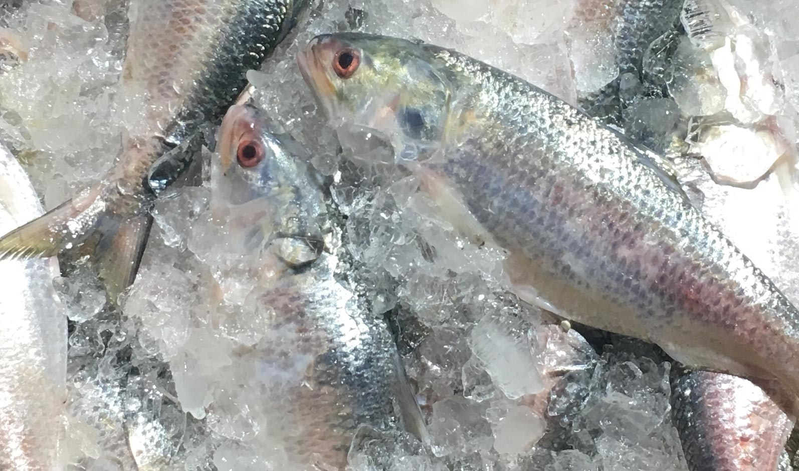
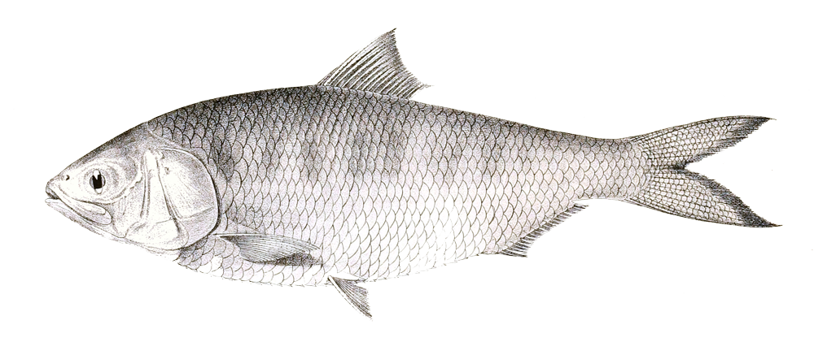
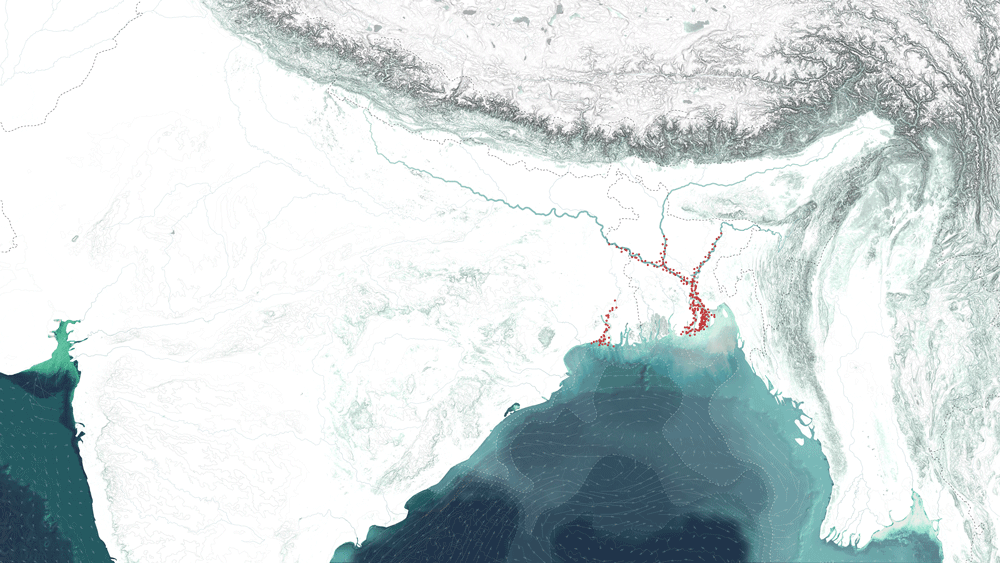
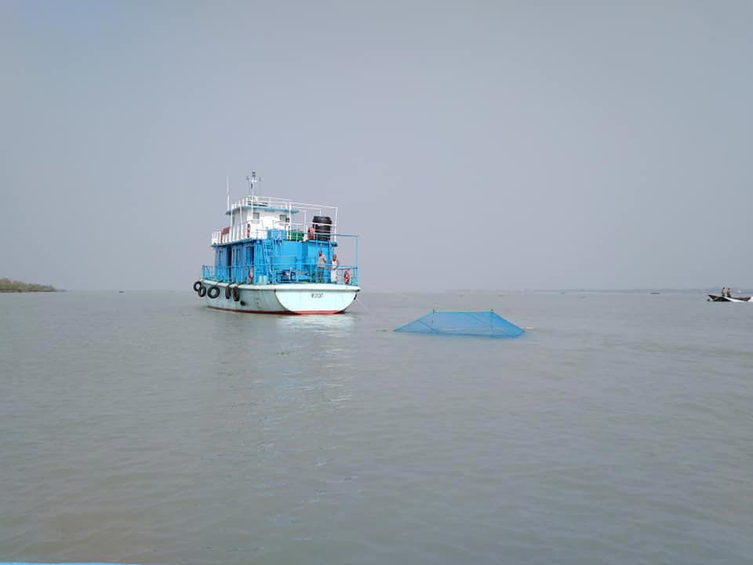
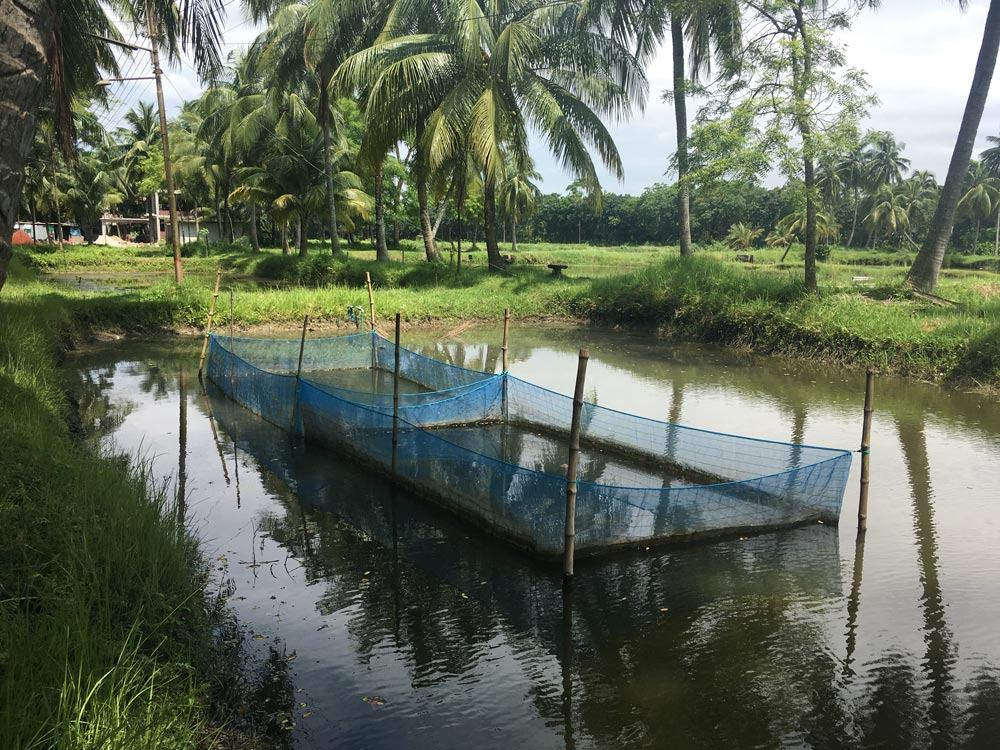

Changing hilsa
water-worlds


Hilsa, the national fish of Bangladesh, is entangled with processes of urbanisation and industrialisation. Construction of dams, barrages, roads, bridges, ports, factories and energy infrastructures impact delta water-worlds. Such anthropogenic activities alter water and sediment flows, intensify nutrient and pollution loads, and disrupt underwater environments. Hilsa are responding in unforeseen and unpredictable ways.
Illustration of Tenualosa ilishia syn. Clupea Ilisha. F. Day, The Fishes of India: Being a Natural History of the Fishes Known to Inhabit the Seas and Fresh Waters of India, Burma, and Ceylon, Volume 2, 1878, Plate CLXII. Source: Wiki Commons.
Hilsa and the monsoon
Known as ilish in Bengali, hilsa are a monsoonal species. They inhabit the Indian Ocean coastline, but are most abundant in the upper reaches of the Bay of Bengal. At the apex of the Bay immense monsoonal flows merge with ocean currents and tides creating a unique ecosystem. Hilsa spend most of their life in the Bay and migrate to the rivers of the delta to breed. The rains of the southwest monsoon initiate their spawning migration. Hilsa used to migrate to the upper reaches of all major rivers, but recently their range has dramatically reduced. Altered hilsa mobilities are an indicator of shifting human-nonhuman relations.
“The Ilisha frequents the Bay of Bengal and the large salt water estuaries of the Ganges, and in the rainy season ascends the larger rivers to spawn. I have seen it as high as Agra and Kanpur, but … about Calcutta and Dhaka it is in the utmost abundance and perfection”.1
Changing hilsa migration routes in the major rivers of the Bengal Delta from the eighteenth century to the present day.
The fisher
Fishers from the Meghna River ascribe changing hilsa migration patterns to the inhospitable river environment. The Farakka Barrage, commissioned in 1975 by the Indian government, transformed Bangladesh’s rivers. The barrage reduced the velocity of monsoonal flows leading to siltation and sedimentation downstream, restricting hilsa movements. Fishers are also concerned by illegal sand mining, fuelled by Dhaka’s booming construction industry. Flotillas of sand dredgers vacuum gravel and sand from the river, altering its bathymetry and disturbing fish migration routes. In response to changing hilsa movements, fishers are forced deeper into the turbulent Bay of Bengal.
“The river has changed; the difference is like day and night. When we were children the flow was much higher than at this time”.2
Fishers attune themselves to rivers, tides, weather and fish migration. Through embodied practices they gain intimate knowledge of hilsa and their monsoonal environments.
Huge flotillas of sand dredgers proliferate along the Meghna River below Dhaka. Dredging increases turbidity and underwater noise, disturbs plankton and endangers fish.
The scientist
In recent decades, rapid urbanisation and the increased purchasing power of the urban middle class has led to greater fish consumption. Increased demand for hilsa, the ‘queen of fish’ resulted in unsustainable fishing practices and hilsa numbers declined from the 1970s onwards, reaching record lows in the early 2000s. Alarmed by the diminishing numbers, scientists mobilised to conserve the species. To curb unsustainable fishing, regulate supply to urban markets and ‘save mother hilsa’, scientists developed annual pre- and post-monsoon fishing bans timed to the seasonal movement of the fish. These initiatives have increased hilsa numbers, but much about the fish remains a mystery.
“The strict ban period is March to April. We say, now it’s your turn to go back to the ocean. Go peacefully, without interruption, without problem”.3
Bangladeshi scientists involved in hilsa research spend hours, days and weeks on boats, often working alongside traditional fishers, netting, weighing, examining and observing fish. Source: BFRI, permission for use by Dr. Mohammad Alam.
The Bangladesh Fisheries Research Institute (BFRI) Chandpur Riverine Station, located at the confluence of the Padma and Meghna rivers, is at the forefront of hilsa research. Despite intensive research initiatives, hilsa refuse to breed in captivity, perhaps because humans cannot replicate the dynamic monsoonal processes of the Bengal Delta.
The cook
Hilsa is cooked in a myriad of ways but knowing how to buy hilsa is an essential part of the cooking process. Not all hilsa are the same, river hilsa are tastier than marine hilsa because their bodies change as they move upstream. Hilsa from the Padma River are particularly cherished for their flavour, which is attributed to the qualities of the river water. As their flavour peaks at the height of the rains, for many, hilsa is the taste of monsoon season. However, as infrastructural interventions alter river ecologies, the taste, smell and texture of the fish is changing, and is sensed by those who consume them.
“When you go to the market, the first thing you learn is how to spot a Padma from a Meghna hilsa. These are things you learn almost through osmosis if you are born here”.4
Karwan Bazar is the largest wholesale fish market in Dhaka city. Hilsa are transported here from regional landing centres, with the majority coming from the mach ghat at Chandpur. Dhaka buyers pay premium prices for Padma hilsa.
The activist
Hilsa can no longer be found in the Buriganga River, one of the most polluted rivers in the world. Its waters are a glossy blue-black, covered with rampant islands of water hyacinth which feed on contaminants. The river carries an all-pervasive stench from effluents spewed from tanneries, garment factories, cement plants and fertiliser manufacturers along its banks. The flushing effects of the monsoon carries pollutants downstream, affecting fish and people who depend on them. Environmental activists believe pollution is changing hilsa movements. Hilsa have a highly developed olfactory organ, making them sensitive to smell and taste. Pollutants may impact their olfactory memory and influence migration routes.
“Hilsa are extremely sensitive ... They can smell hydrogen sulphide, that rotten egg smell, which means they never come to Buriganga or Dhaka city rivers anymore”.5
Despite being the lifeline of Dhaka, the Buriganga River has been classified as ‘biologically dead’ due to the indiscriminate dumping of sewage, domestic and industrial waste. Tests have found that much of the river water contains no dissolved oxygen and is therefore devoid of aquatic life.
Human-hilsa entanglements
Following the hilsa highlights the multiplicity of ways in which fish, people, weather, infrastructure, cities and materials are entangled with one another. As a trans-boundary monsoonal organism, the hilsa is loved across geographies, nationalities, religions, environments and culinary traditions. The decline of this glittering, silver-scaled fish will impact environments and ecologies across the region, irrevocably changing human and nonhuman life-ways in the process.
Mache Bhate Bengali
“Fish and rice make a Bengali”.
1 F. Buchanan-Hamilton, An Account of the
Fishes Found in the River Ganges and Its
Branches, Edinburgh, Archibald Constable
and Company, 1822, p. 244.
2 Hilsa fisher, Chandpur, in conversation with Beth Cullen, 21 July 2018.
3 Fisheries researcher, Dhaka, in conversation with Beth Cullen, 24 July 2018.
4 Amateur cook, Khulna, in conversation with Beth Cullen, 13 July 2018.
5 Environmental activist, Dhaka, in conversation with Beth Cullen, 27 July 2018.
Video of hilsa being prepared and cooked in Letkokkon village on the eastern edge of the Ayeyarwady Delta, Myanmar. Fish and fish products are an essential component of diets in Myanmar, with hilsa the most commonly consumed marine species.
Text by Beth Cullen.
Design by Jonathan Cane.
Changing hilsa water-worlds
Photograph by Beth Cullen.
Hilsa and the monsoon
Drawing by John Cook. Sources: Aerial
Imagery: NASA Blue Marble Imagery;
Topography + Bathymetry: ETOPO1 Global
Relief Model; Oceanic Data: NOAA/NCEP
CFSv2 Climate Forecast System; S. Hossain,
‘The Shifting Habitat of Hilsa: River to Sea’,
Fish for the People, Vol. 15, No. 2, 2017; D.
Ahsan et al., ‘Migration, Spawning Patterns
and Conservation of Hilsa Shad (Tenualosa
ilisha) in Bangladesh and India’, International
Union for Conservation of Nature and
Natural Resources (IUCN), 2014.
The fisher
Photographs and video by Beth Cullen.
The scientist
Photographs and video (bottom group) by
Beth Cullen.
The cook
Photographs by Beth Cullen.
Video by Beth Cullen, with footage from
WorldFish and YouTube, edited by Beth
Cullen. Sources: ‘Fish gasping’, permission
for use by WorldFish; ‘Eating hilsa curry’
and ‘Mustard Hilsa’ footage sourced from
YouTube, utilised under Fair Use policy.
The activist
Photographs and video by Beth Cullen.
Human-hilsa entanglements
Photograph by Beth Cullen.
Footnote
Video by Beth Cullen.